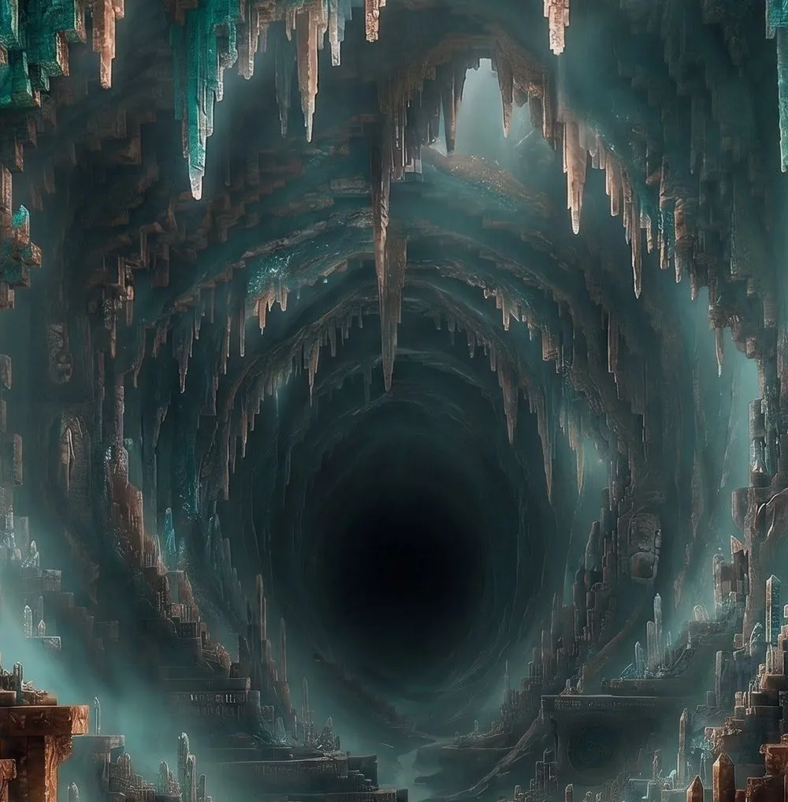
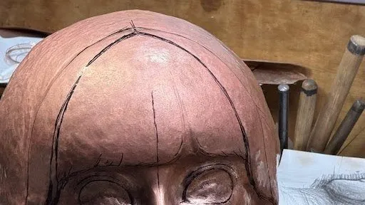

PRJ CÔGEIMU
Are you there?

“Are you there?” asks a copper girl named Kagane. You face her, touch her cheek, and share your warmth through an elemental video game in its earliest form. Winning isn’t the point. You exchange rallies, slowly growing closer to her. She can neither hear nor see you. And yet, the warmth reaches her, and the dialogue goes on. And somehow, you know — she is there.
「そこに、いるの？」 銅の少女・カガネが問いかける。 あなたは彼女と向き合い、頬に触れ、 原初のビデオゲームを通して、ぬくもりを分かち合う。 勝つことが目的ではない。ラリーを交わし、少しずつ彼女に近づいていく。 彼女には、あなたの声も姿も届かない。 それでも、ぬくもりは彼女に届き、対話は続いていく。 そしてなぜか、あなたは知る。彼女がそこにいることを。
01Overview
作品概要Overview
作品“で”遊ぶPlay on the work
作品“と”遊ぶPlay with her
-
鍛金で作られた少女の像A girl made of hammered copper
目の中は空洞になっていて、その奥にはモニターがある。覗き込むと、ゲームで遊ぶことができる。Her eyes are hollow, with screens set deep inside. Lean in and look into them, and you can play.
-
インゲームはピンポンゲームThe game is pong
自分のバーを操作し、球を跳ね返す原初のデジタルゲームがベース。左右の頬にプレイヤーの体温を伝えることで操作する。Based on the very first kind of digital game: move your paddle and return the ball. You control it by passing the warmth of your hands to her left and right cheeks.
-
目指すのは、新たな芸術の形Towards a new form of art
少女と一緒にゲームを遊ぶ体験を通じて、他者と関わることの難しさや楽しさを描く。遊び終わった後に、少女と遊んだ“思い出”が残るような作品を目指す。Through playing a game together with her, the work explores the difficulty and joy of relating to another. We want players to walk away with a memory of the time they spent with her.
02Fact sheet
作品データFact sheet
- Title
- ARE YOU THERE?
- Codename
- 02 Kagane
- FormForm
- 銅の鍛金彫刻 × インタラクティブ・ビデオゲーム（一点物）Hammered copper sculpture × interactive video game (one of a kind)
- Hardware
- 内蔵モニター（両眼の奥）／温度センサー（両頬）／マイク（口）Built-in screens (behind both eyes) / temperature sensors (both cheeks) / microphone (mouth)
- Input
- プレイヤーの体温 ─ 両頬に手で触れるThe player’s body heat — touching both cheeks
- Genre
- 金属肌の少女と向き合い、目を合わせて対話するゲームアートGame art in which you face a metal-skinned girl, meet her eyes and converse
- Players
- 1人（対戦相手は作品そのもの）1 (your opponent is the artwork itself)
- Voice
- 日本語／英語 フルボイスFully voiced in Japanese and English
- Cast
- CV：CV: TBA
- Venue
- ギャラリー／美術館／アートフェア／ゲームイベントGalleries / museums / art fairs / game events
- Status
- 制作中In production

複製は行わず、世界に1つだけのゲームアート作品とする予定です。完成後は各イベントや展示会に出展予定です。 No copies will be made: this will be a single, one-of-a-kind work of game art. Once complete, it will tour events and exhibitions.
03The sculpture
外装 ─ 覗き込み、目を合わせるThe sculpture — lean in, meet her eyes
- 素材・技法Material & technique ─ 銅／鍛金（金属を叩いて成形する伝統技法）copper / tankin, the traditional technique of shaping metal by hammering
- 制作Made by ─ 塩見亮介（鍛金家・甲冑師）Ryosuke Shiomi (metal artist, armour maker)
- 瞳Eyes ─ 眼窩を空洞とし、その奥にモニターを内蔵するhollow sockets with screens mounted inside
- 鑑賞姿勢Viewing posture ─ 覗き込まなければ画面が見えない。相手と向き合い、目と目を合わせる必然をつくるthe screen is only visible when you lean in — you have no choice but to face her and meet her eyes
- 両頬Cheeks ─ 温度センサーを内蔵。触れることで人の温もりがジワっと伝わり、入力が発生するbuilt-in temperature sensors; your warmth slowly seeps in and becomes input
- 台座Plinth ─ 覗き込みやすい高さに設置（展示環境に応じて調整）set at a height that makes leaning in natural (adjusted per venue)



04Interface
頬に触れる ─ 体温が、入力になるTouch her cheeks — body heat as input
コントローラーも、ボタンもない。No controller. No buttons.
- 両頬に温度センサーを内蔵。手で包むと温度が上がる。Temperature sensors sit in both cheeks; cup them in your hands and they warm up.
- 右頬の温度が上がる → 自機（バー）が右へ。左頬なら左へ。Right cheek warms → your paddle moves right. Left cheek → left.
- 入力の主体は「押す」ではなく「伝える」。触れ方の強さ・長さが、そのまま操作の精度になる。Input isn’t about pressing but conveying. How firmly and how long you touch her becomes your precision.
冷たい金属に人の体温が移る、という物理現象をそのままゲームのルールに。手のひらのぬくもり ── 人の想いや意思が、鍛金の少女へとじんわり伝わっていく。 The simple physics of human warmth passing into cold metal becomes the rule of the game. The warmth of your palms — your feelings and intent — slowly seeps into the hammered girl.
05The game
勝つためではなく、続けるためのピンポンPong — played not to win, but to keep going
- 原初のデジタルゲームでもある、ピンポンゲーム。Pong — one of the very first digital games.
- 右頬を温めると自機が右へ、左頬を温めると左へ移動する。Warm her right cheek to move right, her left cheek to move left.
- 相手に打ち返させず、ボールを後ろへ通過させると得点。Get the ball past her paddle to score.
- 対戦相手は鍛金少女。作品そのものが対戦相手になる。Your opponent is the girl — the artwork itself.
- 少女は機嫌に合わせて“イタズラ”もしてくる。Depending on her mood, she’ll start playing pranks on you.
得点を取ることはゴールではない。なるべく同点のままラリーを続けること ── 対等な立場でコミュニケーションを取り続けること ── で、美しい対話を行うことがこのゲームのゴール。 Scoring isn’t the goal. The goal is a beautiful conversation: keeping the rally going with the score as even as possible — communicating with her as an equal.
画面イメージは模式図ですSchematic only
06Emotion system
鍛金少女には、感情があるShe has feelings
心理学者ジェームズ・ラッセルの「感情の円環モデル（Circumplex Model of Affect）」を参考に設計。縦軸を Tension（沈静⇔覚醒）、横軸を Pleasure（不快⇔快）の2軸で表現し、プレイヤーの行動によって値が動き続ける。少女の言葉や行動は、この感情によって変化する。 Designed after psychologist James Russell’s circumplex model of affect. Her state is expressed on two axes — Tension (sleepy ⇔ aroused) and Pleasure (unpleasant ⇔ pleasant) — which shift constantly with what you do. Her words and actions change with them.
右上（喜び・楽しい）へ向かうほど遊びは長く続き、左下（悲しみ・退屈）へ落ちるほど、ゲームは早く終わる。 The closer she gets to joy, the longer the game goes on. The deeper she sinks into sadness and boredom, the sooner it ends.
ラリーが続くほど、テンションが上がるLonger rallies raise her tension
打ち返すたびにテンションが積み上がり、同点のままならさらに大きく伸びる。すぐに途切れると「もっとラリー続けてよ！」と不満げに。Every return builds tension, even more so when the score is level. Let the rally die quickly and she’ll complain: “Keep the rally going!”
得点の“譲られ方”が、機嫌を動かすHow points are given moves her mood
少女が得点すると機嫌が上がる。でも、ラリーもせずに得点するとわざと負けられたように見えて機嫌が下がる。スマッシュやカーブを拾えると「やった！」と喜ぶ。She’s pleased when she scores — but a point handed over without a rally feels like you lost on purpose, and she sulks. Return a smash or a curveball and she lights up.
白熱すればテンションが上がるし、上手く点が取れると喜ぶ。楽しませるには、会話と同じく、相手を想った押し引きやバランスが大切。 She gets fired up when things heat up, and happy when she scores well. As in any conversation, keeping her entertained takes give and take, and care for the other.
07Pranks
イタズラという、追加ルールShe changes the rules
機嫌が良くなってくるほど、少女は“イタズラ”を仕掛けてくる。Pleasure が高いほど発生頻度が上がり、Tension が高いほど大胆になる。 The better her mood, the more pranks she plays. Higher pleasure makes them more frequent; higher tension makes them bolder.
片目をつぶるShe closes one eye
覗き込んでいた片目が真っ暗に。見えないまま、推測しながらラリーを続けることになる。One of the eyes you’re looking through goes dark. You keep rallying half-blind, partly by guesswork.
操作を左右反転するShe flips your controls
右頬を温めると自機が左へ。触れ方と結果の対応が、突然入れ替わる。Warm her right cheek and you move left. Touch and result suddenly swap places.
ルールを追加・変更するShe adds new rules
スライスで曲がるカーブ球が加わったり、次の得点が2倍になったり……ルールが変わっていく。Sliced shots start to curve, the next point is suddenly worth double… the rules keep shifting.
ルールを決めるのは彼女。思いつきのイタズラに振り回されながら、それでも一緒に遊ぶ。これが、作品“と”一緒に遊んだと感じられる最も重要な要素。 She makes the rules. You get pushed around by her whims — and play on together anyway. This, more than anything, is what makes it feel like you played with the work.
08Match extension
彼女は、もっと遊びたいShe wants to keep playing
3点マッチで開始。The game starts as a 3-point match.
3点の時点で機嫌が良ければ、5点マッチへ。If she’s in a good mood at 3 points, it becomes a 5-point match.
5点の時点でさらに機嫌が良ければ、7点マッチへ。Happier still at 5, and it stretches to 7.
機嫌の良い状態を保ったまま7点を先取すると、特別なイベントが起こる。Reach 7 while she’s still happy, and something special happens.
彼女が楽しめていればゲームは続き、どんどん盛り上がる。そうでなければ、早く切り上げられる。これも、対話と同じ。 If she’s enjoying herself, the game goes on and builds and builds. If not, it’s cut short. Just like a conversation.
09Character
カガネKagane
- Name
- カガネKagane銅の古名「アカガネ」からfrom akagane, the old Japanese word for copper
- Material
- 銅（鍛金）Hammered copper実際の人間の頭部より一回り大きいa little larger than a real human head
- CV
- TBA
冷たい金属の肌。
けれど、その内側の魂は、どこまでも人間らしい。
Skin of cold metal. A soul inside that is as human as can be.
ロボットでも、謎の生命体でもない。明るくて感情豊かで、よく笑い、よく拗ねる、生身の女の子のような存在。遊び終えたとき、目の前の鍛金像が本当に生きていたように感じられる ── そんなキャラクターを目指しています。 Not a robot, not an uncanny creature — a bright, emotional girl who laughs easily and sulks just as easily. We want players to finish the game feeling that the metal figure in front of them was truly alive.
銅の性質から生まれた性格A personality forged from copper
素直で柔軟Honest and flexible
相手や状況に合わせて柔軟に対応できる。周りだけでなく、自分の気持ちや「やりたいこと」にも素直。Adapts easily to people and situations — and is just as honest about her own feelings and what she wants to do.
空気を読みつつ、自分も持っているReads the room, keeps herself
相手の感情を読み、その人に合わせたコミュニケーションができる。でも自分を抑えすぎることはなく、楽しくなってくるとどんどん我が出てくる。She reads people and meets them where they are, without hiding herself — and the more fun she has, the more her own will comes out.
明るく、社交的Bright and sociable
人見知りせず、どんな相手とも自然に仲良くなれる。好奇心旺盛で、自分から人や物事に関わっていく。Never shy, she befriends anyone naturally. Curious about everything, she’s the one who reaches out first.
不遇でも、卑屈にならないOverlooked, never bitter
鉄に役割を譲ったり、「金・銀・銅」では一番になれなかったり。それでもコンプレックスにはせず、誰かの役に立てることを素直に喜べる。ある意味マイペース。She gave way to iron, and always comes third after gold and silver. But she doesn’t dwell on it — she’s simply glad to be useful to someone. Happily herself.
Voice
おーい！ そこのあなたッ！ こっちで一緒にあそぼー！
Hey! Yes, you! Come over here and play with me!
Attract
えへへ……、あったかい…。あなたの温もりを感じるよ…。
Hehe… so warm… I can feel your warmth…
In rally
…くふふっ。あれ？ 気づいちゃった？ あなたの操作を逆にしちゃった！
…Pfft. Oh? You noticed? I flipped your controls!
Prank
セリフは開発中のものですLines are from a work in progress
10Process
制作の様子In the making
プロトタイプ（01 Yuki）での検証を経て、銅による本制作がスタートしました。 After testing with the prototype (01 Yuki), production of the copper piece is now under way.


art bit #6（2026）では、Yuki の像を使ってカガネの遊びのテスト展示を行いました。 At art bit #6 (2026), Kagane’s gameplay was test-exhibited using Yuki’s body.
Credits
- Direction
- カミエナKamiEna
- Metal work
- 塩見亮介Ryosuke Shiomi
- Programming
- 金子尊Takeru Kaneko
- Character voice
- TBA